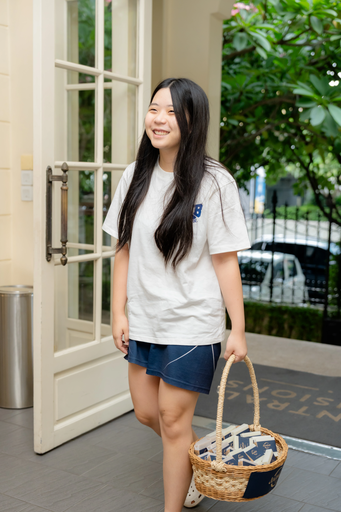
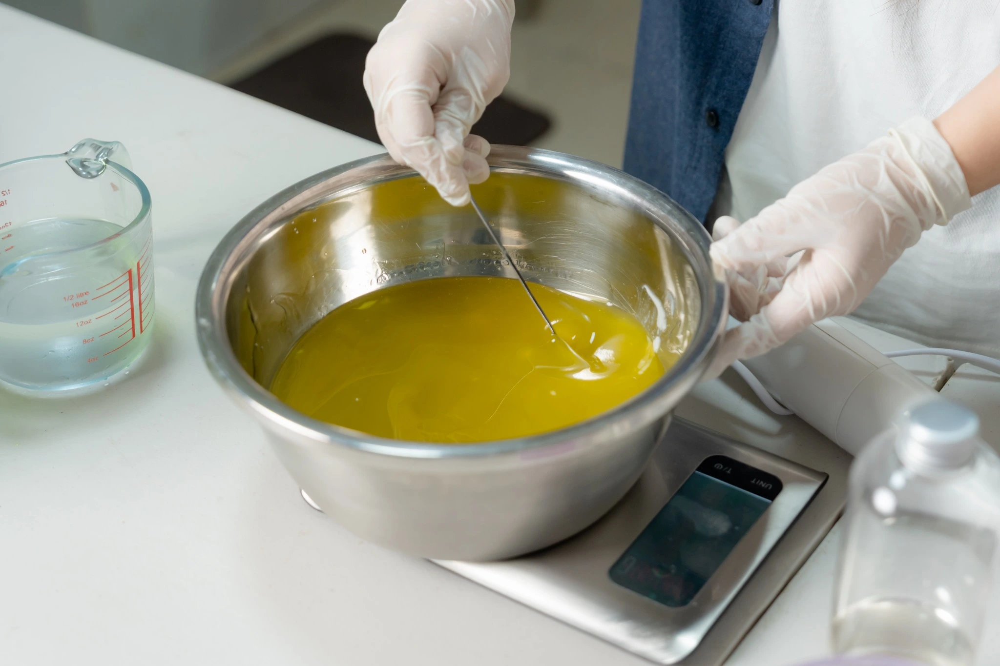

Our Mission
ANAMAY creates high-quality handmade soap products made by local women, while using part of the profits to build sanitary toilet facilities in underserved communities in rural Cambodia.
ANAMAY (អនាម័យ) is a Cambodian non-profit social enterprise that produces high-quality handmade soap products while creating positive social impact. The business aims to empower local women through employment opportunities.
All profits from its sales are dedicated to build sanitary toilet facilities in underserved communities in rural Cambodia. ANAMAY combines hygiene, sustainability, women empowerment, and community support into a single business model that serves both commercial and social purposes.
ANAMAY creates high-quality handmade soap products made by local women, while using part of the profits to build sanitary toilet facilities in underserved communities in rural Cambodia.
Our aim is to improve hygiene, empower women, and provide safe sanitation for rural communities in Cambodia through sustainable handmade soap production.

Ms. Phasukar Phan is currently a junior studying at a high school in Phnom Penh. Driven by her passion for economics, business, and leadership, she founded ANAMAY with the goal of bringing positive change to her community. She believes that we can be the change we want to see, and this belief continues to inspire her work with ANAMAY and her other initiatives.
Each ANAMAY soap bar is handmade in small batches with care, from blending quality ingredients to wrapping every bar by hand. Our process reflects our commitment to craftsmanship, hygiene, and quality.
